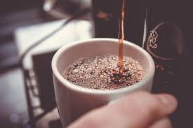

Sobre a Cafeteria Alura
Localizada no coração da cidade, a Cafeteria Alura propõe o melhor café que você tomará de todos. Fundada em 2020, a Cafeteria Alura já é destaque na cidade e atrai novos clientes a cada dia.
Nossa missão é: "Proporcionar uma refeição de qualidade com o melhor atentimento aos clientes".
Oferecemos profissionais experientes e competentes para preparar a sua refeição. O atendimento possui padrão de excelência e progresso rápido, garantindo qualidade e satisfação aos nossos clientes
Nosso estabelecimento
Benefícios
Nosso estabelecimento esta localizado no coração da cidade
- Atendimento aos Clientes
- Espaço diferenciado
- Localização
- Profissionais qualificados
- Limpeza
- Organização